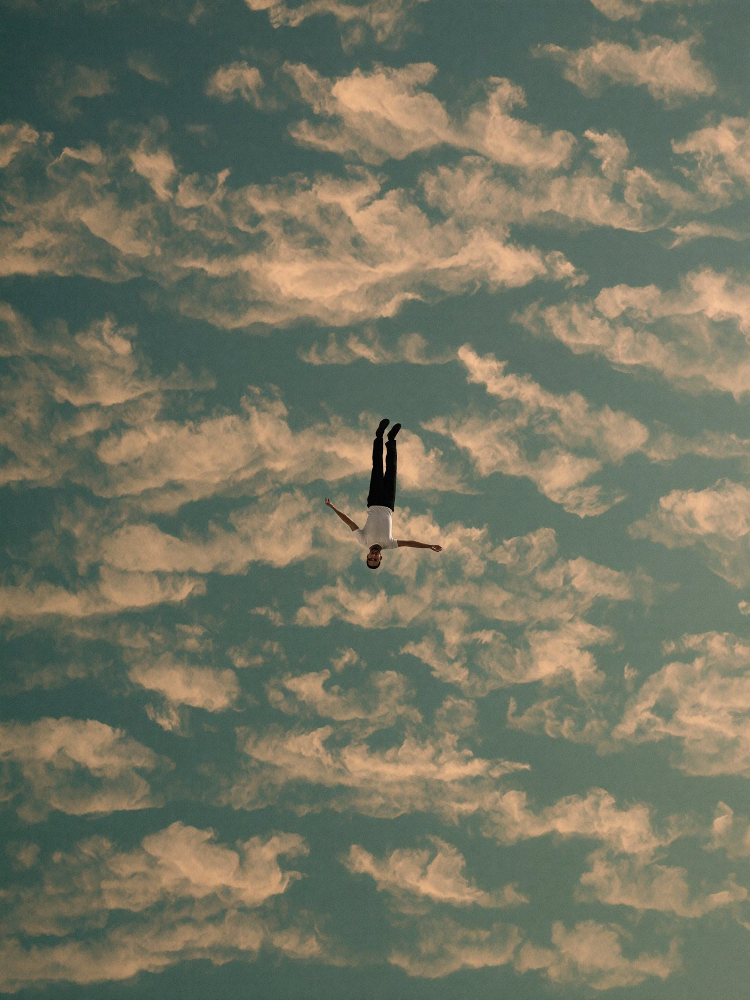
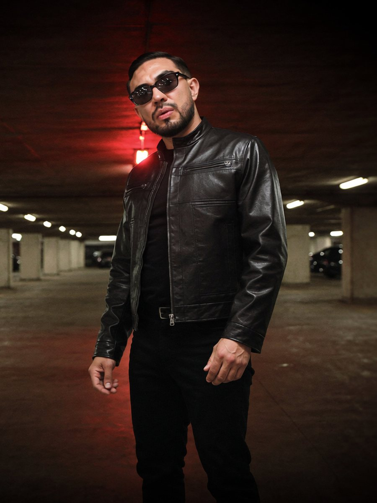
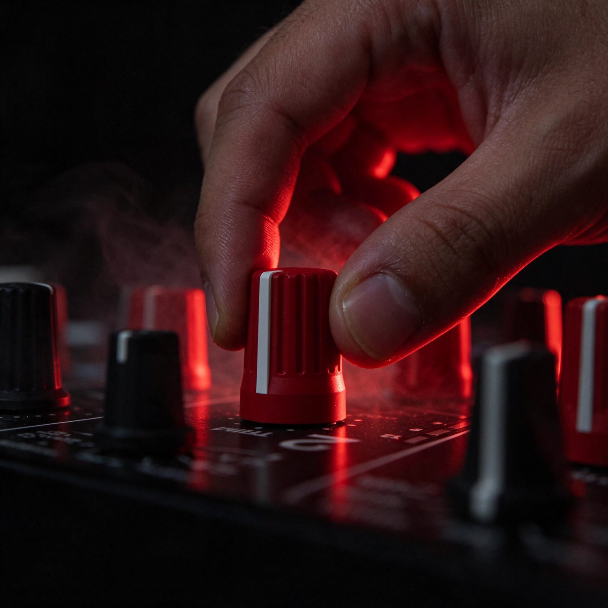
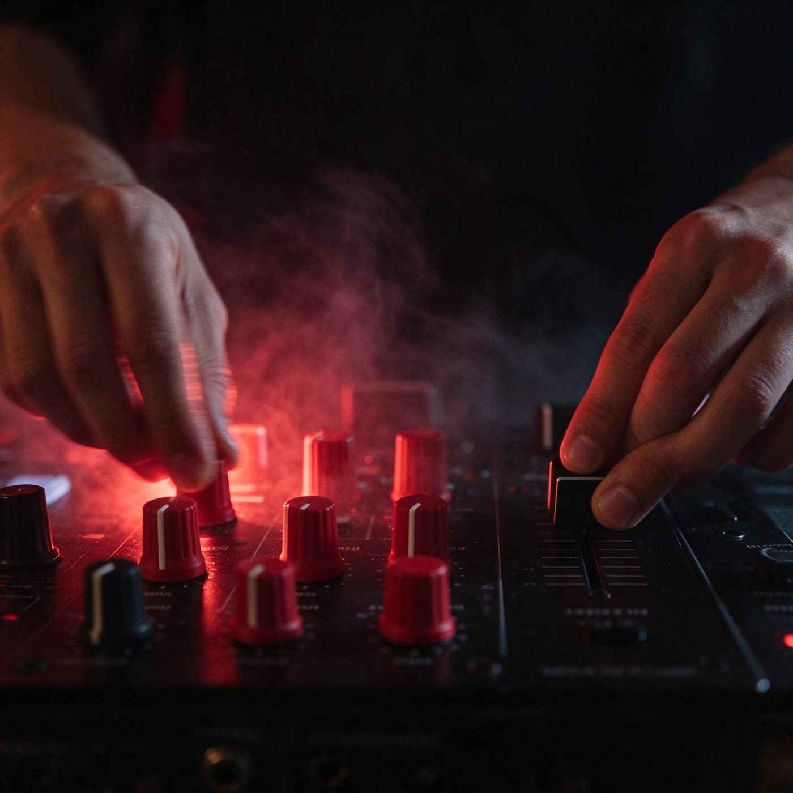
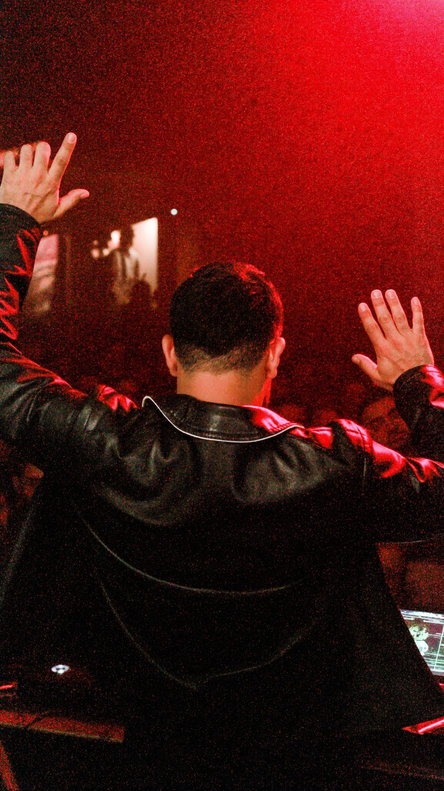
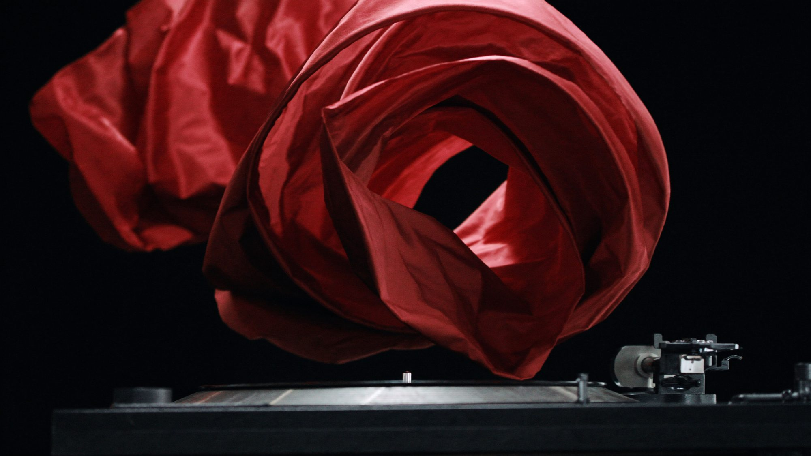

DJ · Productor · CreadorProducer · Creator
La noche empieza
antes del ruidoThe night begins
before the noise
DescubrirDiscover
Nuevo sencilloNew single
Cielo
11 · 12 · 26
No todas las noches se sienten igual.Not every night feels the same.





Campaña 20262026 Campaign

BiografíaBiography
House con raíz mexicanaHouse with Mexican roots
Con 9 años en la cabina y más de 1,000 presentaciones, Leonardo Plata domina el arte de leer una pista y llevar una noche común a una noche memorable. Su sonido une la elegancia del house underground (organic, deep, tech y minimal) con samples del regional mexicano: trompetas con sordina, guitarras sutiles y acordeón.
Es residente de Terraza Simón en Querétaro y ha tocado en México, Estados Unidos, España, Colombia y el Caribe. En 2026 lanzó el álbum Jefe de Jefes y abre una nueva etapa con CIELO, su sencillo del 11 de diciembre.
With 9 years behind the decks and more than 1,000 shows, Leonardo Plata has mastered the art of reading a dance floor, turning an ordinary night into a memorable one. His sound brings together underground house (organic, deep, tech and minimal) with samples from Mexican regional music: muted trumpets, subtle guitars and accordion.
He holds a residency at Terraza Simón in Querétaro and has played across Mexico, the United States, Spain, Colombia and the Caribbean. In 2026 he released the album Jefe de Jefes, and he opens a new chapter with CIELO, out December 11.

Álbum · 2026Album · 2026
Jefe de Jefes
15 tracks, también para vinilo. Un puente entre organic, deep, tech house y minimal con el regional mexicano como textura. Destacan "Jefe de Jefes", "Así es la vida" y "Desmadre" con JAVS. En más de 30 playlists globales.
15 tracks, also prepared for vinyl. A bridge between organic, deep, tech house and minimal, with Mexican regional music as texture. Highlights: "Jefe de Jefes", "Así es la vida" and "Desmadre" with JAVS. Featured in 30+ global playlists.
DiscografíaDiscography
LanzamientosReleases
- 2026CieloSencillo · 11.12.26Single · Dec 11
- 2026Jefe de JefesÁlbum · 15 tracksAlbum · 15 tracks
- 2025Desvelado
- 2025Adiós Amor
- 2025Mexicavafeat. Carlos Plata
- 2025Paseo
- 2025Booty
- 2024Magia Azulfeat. SAASH
- 2024Diablofeat. Jey Baz
- 2024Black Magic
- 2024Papi

En vivoLive
Cada noche,
una pista distintaEvery night,
a different floor
Ver trayectoriaSee the journey
TrayectoriaJourney
Cabinas y escenariosBooths and stages
ResidenciasResidencies
- Terraza Simón · Querétaro
- Celebrity X Cruises
- Amelia · Grupo Sirilo
Radio
- EXA FM
- Diverso Radio
ClubesClubs
- Teatro Barceló · Madrid
- Janis · CDMX
- Fame · León
- Mallet · Querétaro
- APTK · CDMX
- Casa María · Jalisco
- Amelia · San Miguel de Allende
- Black · Chicaball · Cancún
FestivalesFestivals
- Shine The Night · USA
- Rosalinda
- Sunset Music Sessions
- Cumbre Tajín
- Holidance of Colors
- Feria de San Marcos
- Feria del Vino y el Queso
Cabina compartidaShared booth
- Showtek
- Ryan Castro
- María José
- Kumbia Kings
- Bogueto
- Ingratax
- Uzielito Mix
- Maciel

México · USA · España · Colombia · CaribeCaribbean

Booking y contratacionesBooking
leonard.plata@gmail.comRider · Pioneer XDJ-RX3 · DJM-900NXS · CDJ-2000NXS2